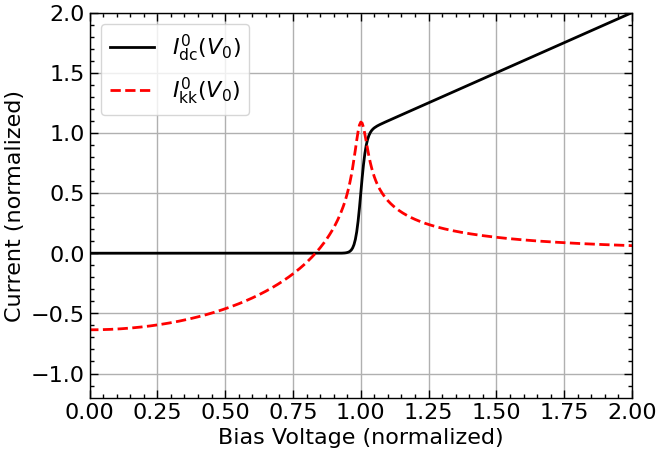
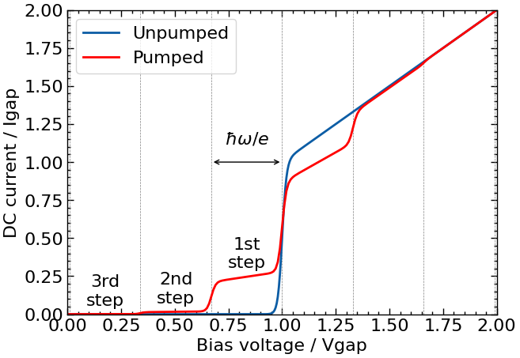
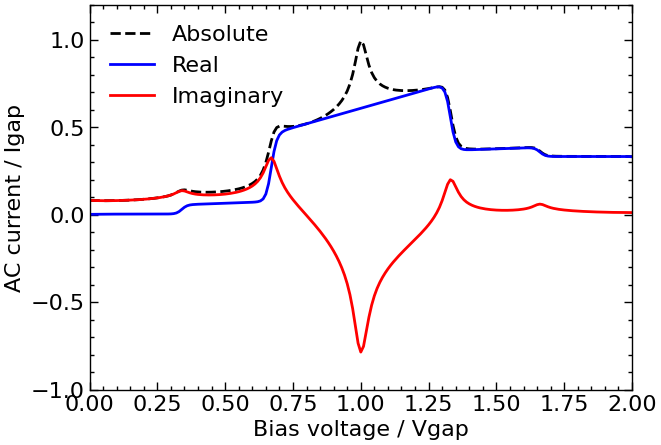

4. Example #1: Creating a simple 1 tone simulation
This notebook contains a very simple SIS simulation:
The input consists of only one tone and one harmonic
The embedding circuit is ignored (i.e., no harmonic balance is required)
The DC current-voltage relationship is generated through a polynomial model
The simulation then calculates:
The DC tunneling current (i.e., the pumped I-V curve)
The AC tunneling current
[1]:
%matplotlib inline
import qmix
import numpy as np
import matplotlib.pyplot as plt
# https://github.com/garrettj403/SciencePlots
import scienceplots
plt.style.use(['science', 'notebook'])
OMP: Info #276: omp_set_nested routine deprecated, please use omp_set_max_active_levels instead.
4.1. Generate the response function
Here we will generate the response function using the polynomial model from Kennedy (1999).
The
RespFnPolynomialclass will automatically generate the Kramers-Kronig transform of the DC I-V curve, and then setup the interpolation.
[2]:
resp = qmix.respfn.RespFnPolynomial(p_order=50)
# Plot
fig, ax = plt.subplots(figsize=(7,5))
resp.plot(ax=ax);
Generating response function:
- Interpolating:
- DC I-V curve:
- npts for DC I-V: 273
- avg. error: 3.7010E-10
- max. error: 0.0000 at v=-1.10
- KK curve:
- npts for KK I-V: 330
- avg. error: 6.1923E-07
- max. error: 0.0001 at v=1.11

4.2. Define embedding circuit
The EmbeddingCircuit class contains all of the information about the embedding circuit. This includes the Thevenin voltages, the Thevening impedances, and the frequencies of the applied signals. In this notebook, the Thevenin impedance is ignored. This means that the AC voltage across the junction is equal to the Thevenin voltage of the embedding circuit (no harmonic balance required).
Note:
All of the circuit properties are normalized:
voltages are normalized to the gap voltage (
vgap),resistances to the normal resistance (
rn),currents to the gap current (
igap = vgap / rn), andfrequencies to the gap frequency (
fgap).
[3]:
# Create an instance of the embedding circuit class
cct = qmix.circuit.EmbeddingCircuit()
# Set the normalized photon voltage
# (equivalent to the normalized frequency)
cct.freq[1] = 0.33
# Set the Thevenin voltage
cct.vt[1, 1] = 0.33
# Calculate AC voltage across junction
vj = qmix.harmonic_balance.harmonic_balance(cct, resp)
Running harmonic balance:
Done.
4.3. Calculate desired tunnelling currents
qmix.qtcurrent.qtcurrent will calculate the quasiparticle tunnelling current based on the voltage across the junction vj, the simulation parameters contained within cct, and the response function resp.
Note:
The frequency that it solves for is the last argument passed to the function below. For example,
0corresponds to the DC quasiparticle tunnelling currentcct.freq[1]corresponds to the AC quasiparticle tunnelling current of the first tone and first harmonic
[4]:
# DC tunneling current
idc = qmix.qtcurrent.qtcurrent(vj, cct, resp, 0)
# AC tunneling current
iac = qmix.qtcurrent.qtcurrent(vj, cct, resp, cct.freq[1])
Calculating tunneling current...
- 1 tone(s)
- 1 harmonic(s)
- method: direct
Done.
Time: 0.0015 s
Calculating tunneling current...
- 1 tone(s)
- 1 harmonic(s)
- method: direct
Done.
Time: 0.0009 s
4.4. Plot the pumped I-V curve
[5]:
fig, ax = plt.subplots(figsize=(7,5))
# vertical lines for photon steps
for i in range(-10, 10):
ax.axvline(1 - i * cct.freq[1], c='gray', ls='--', lw=0.5)
# plot I-V data
ax.plot(resp.voltage, resp.current, label='Unpumped')
ax.plot(cct.vb, idc, 'r', label='Pumped')
# label the steps
for i, lbl in zip(range(3), ['1st', '2nd', '3rd']):
vtmp = 1 - (i + 0.5) * cct.freq[1]
itmp = np.interp(vtmp, cct.vb, idc)
ax.annotate("{}\nstep".format(lbl),
xy=(vtmp, itmp+0.15),
xytext=(vtmp, itmp+0.15),
va='center', ha='center',
fontsize=16)
# hw/e label
ax.text(1-cct.freq[1]/2, 1.1, r'$\hbar\omega/e$', fontsize=16, ha='center', va='bottom')
ax.annotate("", xy=(1-cct.freq[1], 1), xytext=(1, 1),
arrowprops=dict(arrowstyle="<->", color='k'))
# other labels
ax.set(xlabel='Bias voltage / Vgap', xlim=[0,2])
ax.set(ylabel='DC current / Igap', ylim=[0,2])
ax.legend(frameon=True);

4.5. Plot the AC tunneling currents
[6]:
fig, ax = plt.subplots(figsize=(7,5))
ax.plot(cct.vb, np.abs(iac), 'k--', label=r'Absolute')
ax.plot(cct.vb, np.real(iac), 'b', label=r"Real")
ax.plot(cct.vb, np.imag(iac), 'r', label=r"Imaginary")
ax.set(xlabel='Bias voltage / Vgap', xlim=[0,2])
ax.set(ylabel='AC current / Igap', ylim=[-1,1.2])
ax.legend(frameon=False);
